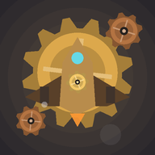

Gear Squadron 개인정보처리방침
1. 수집하는 정보
Gear Squadron(기어 스쿼드론)은 개인정보를 수집하지 않습니다. 게임 진행(함선·골드·보석·스테이지 기록·랭킹 기록·출격 프리셋)은 기기 안에만 저장되며 외부로 전송되지 않습니다.
- 계정·로그인 없음
- 광고 없음, 인앱 결제 없음
- 인터넷·위치·연락처·사진 등 어떤 기기 권한도 쓰지 않습니다
- 시즌 랭킹은 기기 안에서 계산하는 오프라인 순위입니다. 순위표의 라이벌은 게임이 만든 AI 파일럿이며 다른 사용자의 정보가 아닙니다
- 덱 코드 복사는 사용자가 직접 누를 때만 클립보드에 기어 배치를 적습니다
2. 데이터 삭제
모든 데이터는 기기에만 있으므로 앱을 삭제하거나 앱 저장공간을 지우면 함께 지워집니다. 서버에 남는 데이터는 없습니다.
3. 향후 변경
온라인 랭킹·광고·결제를 추가할 경우 이 문서를 먼저 갱신하고, 수집 항목과 목적을 알린 뒤 필요한 경우 앱 안에서 동의를 받습니다.
4. 문의
menewsoft · minyouman@gmail.com
English
Gear Squadron does not collect personal data. All game progress (ship, currencies, stage and ranking records, presets) is stored only on your device and is never transmitted. No accounts, no ads, no in-app purchases, and no device permissions (including internet). The season leaderboard is computed offline on your device; rival pilots are AI-generated, not other users. Uninstalling the app or clearing its storage deletes all data. If online features, ads or purchases are added, this policy will be updated first. Contact: minyouman@gmail.com